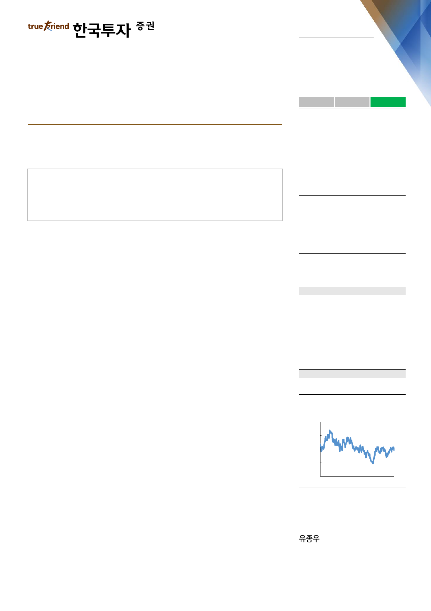

실적 Review
2019. 8. 1
삼성전자(005930)
하 회
부 합
영업이익의 컨센서스 대비를 의미
상 회
수요가 좋아진다고 합니다
하반기 디램, 낸드 수요 전망 긍정적
지난 4월에 언급한 라인최적화를 통한 생산량 조절은 여전히 유효
데이터센터업체 서버디램 재고 정상화로 하반기 수요 개선
Facts : 2분기 디램 및 낸드 bit growth 예상 상회
2분기 디램 bit growth는 17%, 낸드 bit growth는 30%로 당초 가이던스 및 우
리 추정치를 모두 상회했다. 디램은 모바일 채용량 증가와 데이터센터 고객의 주
문이 증가했고 낸드는 가격하락에 따른 모든 주요 application의 채용량 증가가 나
타나기 시작했다. 2분기 bit growth가 예상을 상회하면서 낸드재고는 빠르게 줄어
들기 시작했고 디램재고도 당초 증가할 것으로 예상했던 바와 달리 1분기말 수준
을 유지했다. 3분기에는 디램재고도 감소하기 시작하면서 재고부담이 빠르게 완화
될 것이다. 재고부담이 완화되면서 4분기 메모리가격의 뚜렷한 회복을 예상한다.
Pros & cons : 인위적인 wafer 투입 감소는 없다
지난주 SK하이닉스의 디램 wafer input capa 감소 계획 발표로 시장에 삼성전자
도 wafer input을 줄이지 않을까하는 기대감이 있었지만 어제 컨퍼런스 콜에서 인
위적인 wafer input 감소는 없을 것으로 확인했다. 다만 지난 4월에 언급한 생산
라인 최적화를 통한 소폭의 wafer input 감소 계획은 그대로 유효하다. 삼성전자
가 wafer input 조절을 하지 않겠다는 것은 하반기 메모리 수요에 대해 긍정적인
시각을 가지고 있다는 의미이다. 매크로 환경과 일본 수출 제재 확대 등의 불확실
성이 있기는 하지만 하반기 디램 및 낸드의 수요 전망은 긍정적이기 때문에 기존
생산계획 외에 추가적인 감산이 필요없다는 입장이다. 감산 계획이 없다는 사실을
부정적으로 해석할 이유는 없다.
Action : 수요회복을 믿고 투자의견 ‘매수’ 유지
하반기 메모리반도체 수요회복에 대한 가시성이 높아지고 있다. 모바일의 채용량
회복이 디램과 낸드 모두 나타나고 있고, hyperscaler의 재고조정이 마무리되면서
서버디램 수요도 회복이 나타나기 시작했다. 하반기 메모리 수요회복이 공급업체
재고감소, 수급 및 가격안정화로 이어지는 사이클 회복 전망을 그대로 유지한다.
삼성전자의 3분기 영업이익은 6.8조원으로 전분기대비 3% 증가할 전망이다. 반도
체업황 회복으로 이익모멘텀이 개선되는 삼성전자에 대해 목표주가 55,000원을
유지한다. 목표주가는 2020년 추정EPS에 목표PER 13배를 적용했다.
매수(유지)
목표주가: 55,000원(유지)
Stock Data
KOSPI(7/31)
주가(7/31)
시가총액(십억원)
발행주식수(백만)
52주 최고/최저가(원)
일평균거래대금(6개월, 백만원)
유동주식비율/외국인지분율(%)
주요주주(%) 이건희 외 14 인
국민연금공단
2,025
45,350
270,730
5,970
48,450/37,450
467,274
74.5/58.0
21.2
10.0
Valuation 지표
PER(x)
PBR(x)
ROE(%)
DY(%)
EV/EBITDA(x)
EPS(원)
BPS(원)
2018A
6.0
1.1
19.6
3.7
2.1
6,461
35,342
2019F
15.4
1.2
8.2
3.1
4.0
2,953
36,898
2020F
10.9
1.1
11.0
3.1
3.1
4,175
39,694
주가상승률
절대주가(%)
KOSPI 대비(%p)
1개월
(3.5)
1.5
6개월
(1.7)
6.4
12개월
(1.9)
9.8
주가추이
(원)
62,000
54,000
46,000
38,000
30,000
Jul-17
자료: FnGuide
Jul-18
Jul-19
jongwoo.yoo@truefriend.com